Photo credits
Product photos are free-licence images from Wikimedia Commons. Thank you to the photographers.
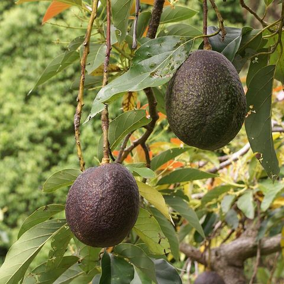
AvocadoB.navez · CC BY-SA 3.0Source on Wikimedia Commons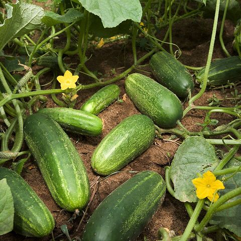
Baby CucumberStephen Ausmus, USDA ARS · Public domainSource on Wikimedia Commons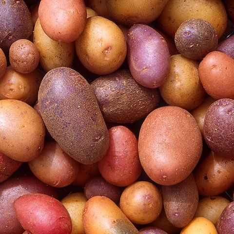
Baby PotatoesScott Bauer, USDA ARS · Public domainSource on Wikimedia Commons BananaAugustus Binu : flickr · CC BY-SA 3.0Source on Wikimedia Commons
BananaAugustus Binu : flickr · CC BY-SA 3.0Source on Wikimedia Commons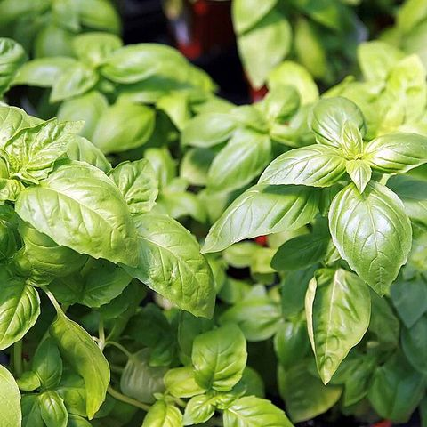
Basil LeavesPhoto by David J. Stang · CC BY-SA 4.0Source on Wikimedia Commons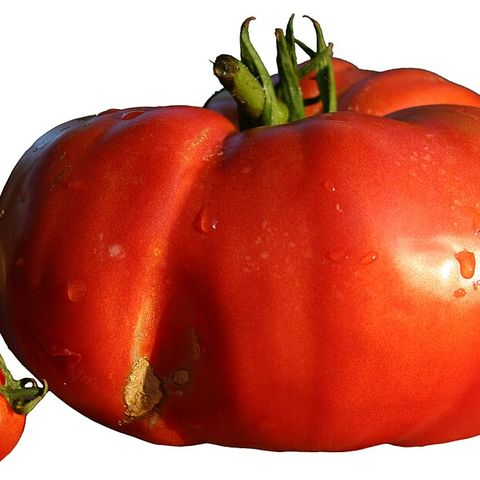
Beefsteak TomatoBerrucomons · CC BY-SA 3.0Source on Wikimedia Commons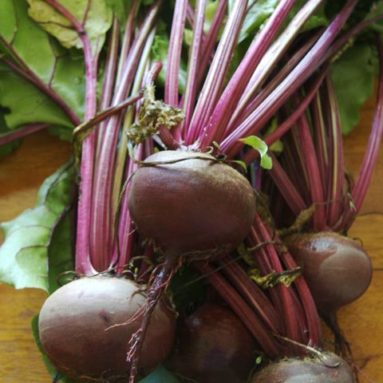
BeetrootBriannaWalther · CC BY-SA 3.0Source on Wikimedia Commons Black GrapesVyacheslav Argenberg · CC BY 4.0Source on Wikimedia Commons
Black GrapesVyacheslav Argenberg · CC BY 4.0Source on Wikimedia Commons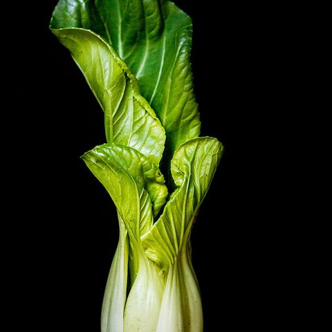
Bok Choyspurekar · CC BY 2.0Source on Wikimedia Commons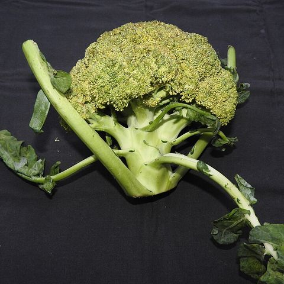
BroccoliYercaud-elango · CC BY-SA 4.0Source on Wikimedia Commons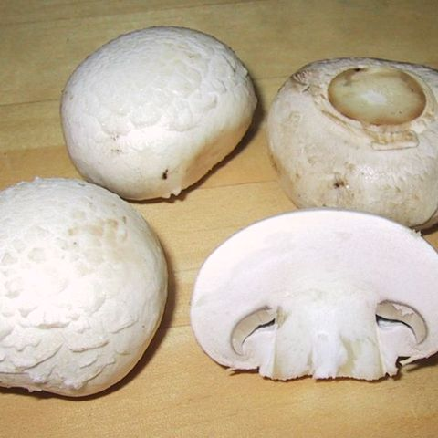
Button Mushroomchris_73 · CC BY-SA 3.0Source on Wikimedia Commons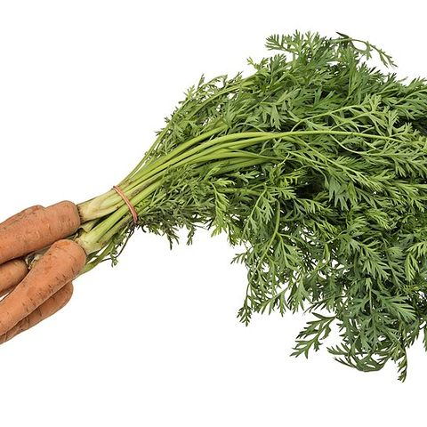
CarrotsEvan-Amos · Public domainSource on Wikimedia Commons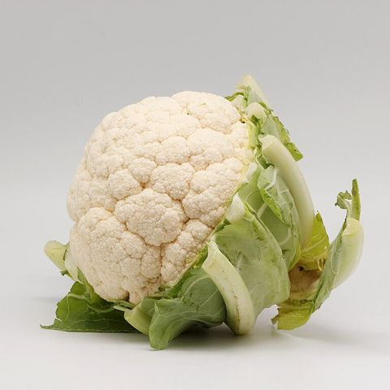
CauliflowerCoyau · CC BY-SA 3.0Source on Wikimedia Commons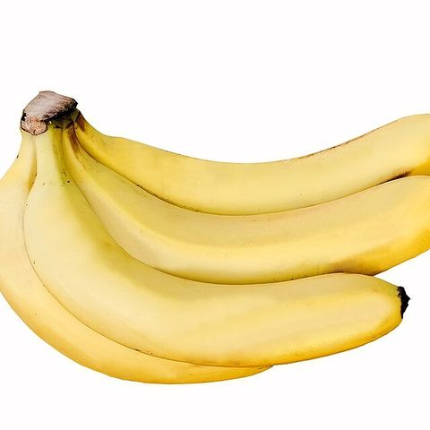
Cavendish BananaAugustus Binu : flickr · CC BY-SA 3.0Source on Wikimedia Commons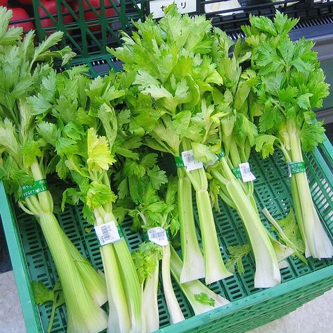
Celery StalksLombroso · Public domainSource on Wikimedia Commons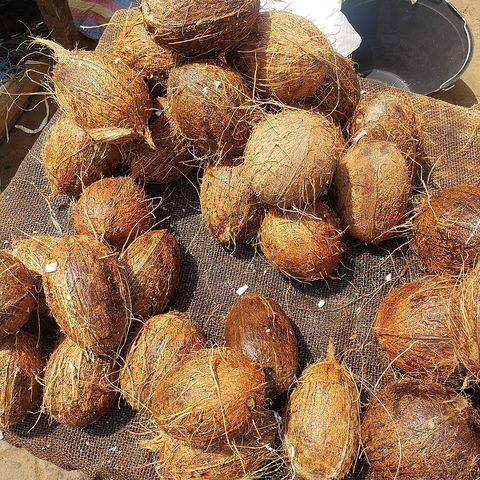
CoconutAchiri Bitamsimli · CC BY-SA 4.0Source on Wikimedia Commons CucumberStephen Ausmus, USDA ARS · Public domainSource on Wikimedia Commons
CucumberStephen Ausmus, USDA ARS · Public domainSource on Wikimedia Commons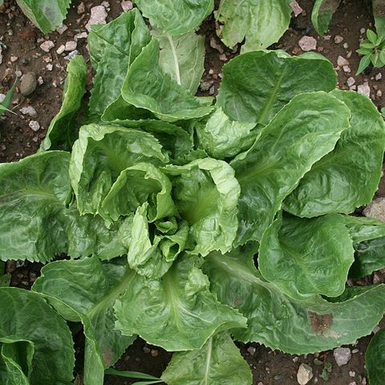
Curly LettuceOceancetaceen - Alice Chodura · CC BY-SA 3.0Source on Wikimedia Commons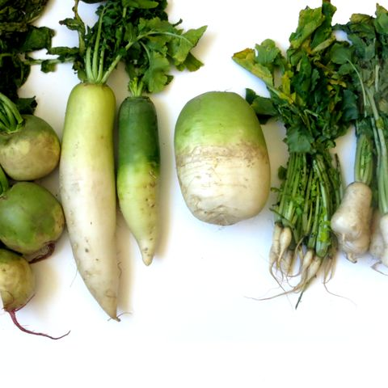
Daikon RadishKimYunmi · CC BY-SA 4.0Source on Wikimedia Commons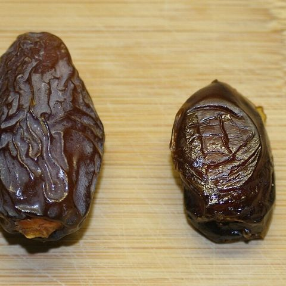
Dates FruitJ.P.Lon · CC BY-SA 4.0Source on Wikimedia Commons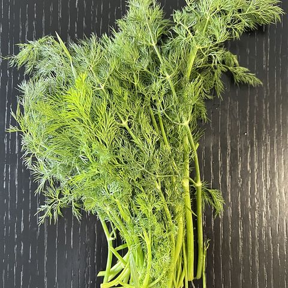
DillHaJunkiyada · CC BY-SA 4.0Source on Wikimedia Commons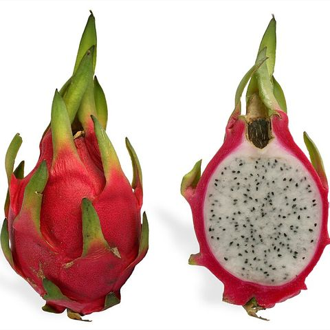
Dragon FruitSMasters · CC BY-SA 3.0Source on Wikimedia Commons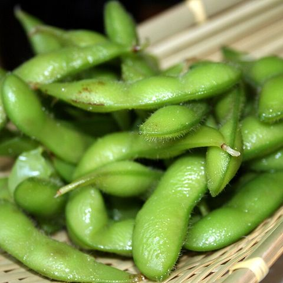
EdamameTammy Green (aka Zesmerelda) from Chicago Upscale Dining + Lounge Republic Pan-A · CC BY-SA 2.0Source on Wikimedia Commons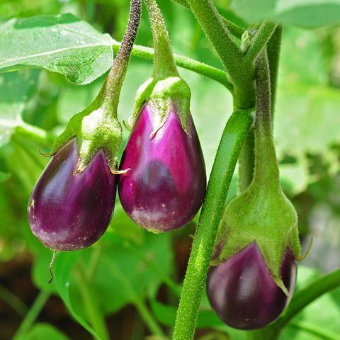
EggplantJoydeep · CC BY-SA 3.0Source on Wikimedia Commons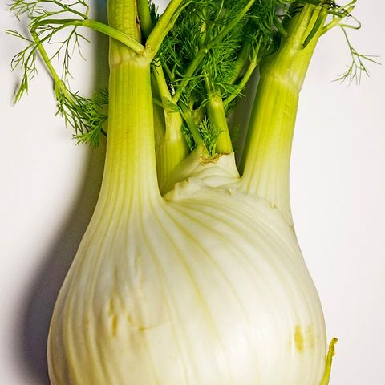
Fennel BulbTiia Monto · CC BY-SA 4.0Source on Wikimedia Commons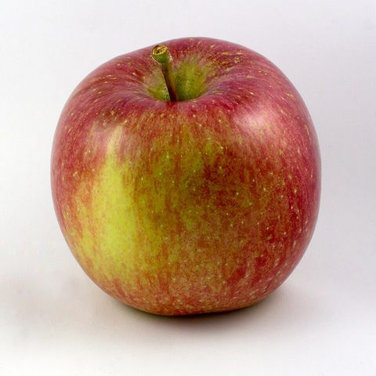
Fuji AppleSuperbass · CC BY-SA 4.0Source on Wikimedia Commons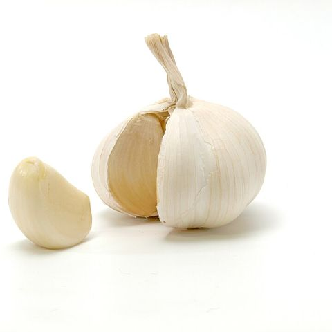
Garlic BulbDubravko Sorić SoraZG on Flickr · CC BY 2.0Source on Wikimedia Commons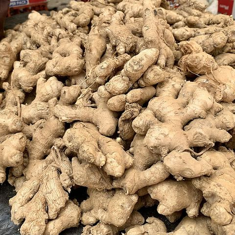
Ginger RootJudethedeus · CC0Source on Wikimedia Commons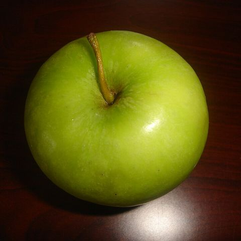
Granny Smith AppleJorcoga · Public domainSource on Wikimedia Commons Green AppleJorcoga · Public domainSource on Wikimedia Commons
Green AppleJorcoga · Public domainSource on Wikimedia Commons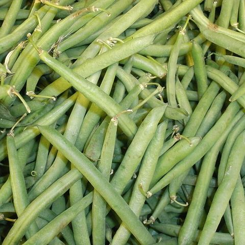
Green BeansJeffery Martin · CC0Source on Wikimedia Commons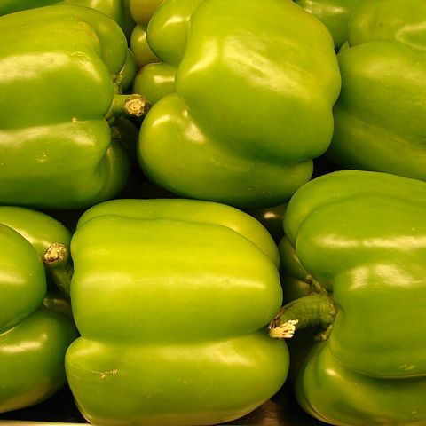
Green Bell PepperForest and Kim Starr · CC BY 3.0 usSource on Wikimedia Commons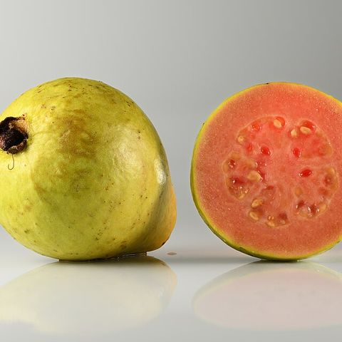
GuavaIvar Leidus · CC BY-SA 4.0Source on Wikimedia Commons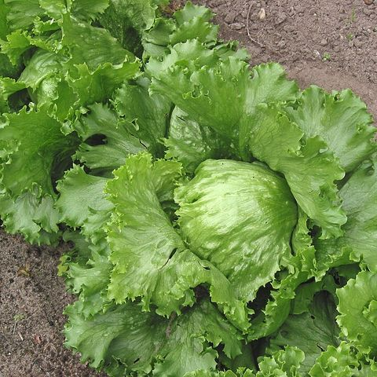
Iceberg LettuceRasbak 13:13, 20 May 2007 (UTC) · CC BY-SA 3.0Source on Wikimedia Commons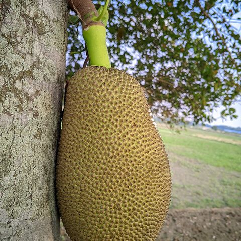
JackfruitThis work was made by Tushar Hossain and released under the license(s) stated be · CC BY-SA 4.0Source on Wikimedia Commons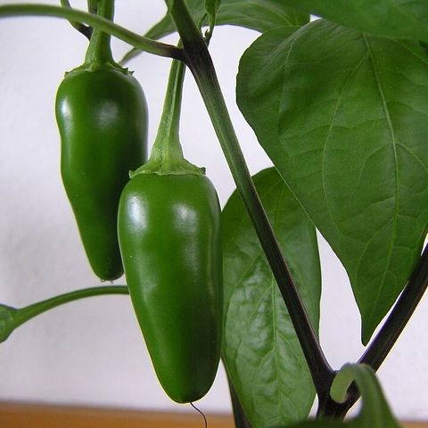
JalapenoUnknown author · CC BY-SA 3.0Source on Wikimedia Commons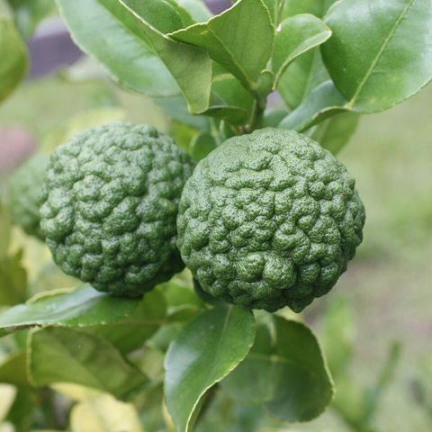
Kaffir Lime LeavesRobyn Jay from Sydney, Australia · CC BY-SA 2.0Source on Wikimedia Commons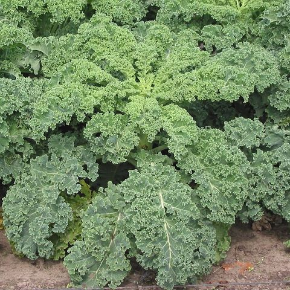
KaleRasbak · CC BY-SA 3.0Source on Wikimedia Commons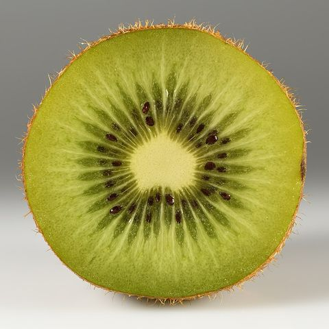
Kiwi FruitIvar Leidus · CC BY-SA 4.0Source on Wikimedia Commons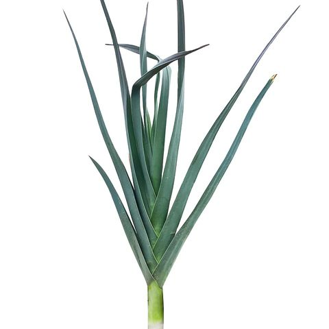
LeekAmada44 · CC BY-SA 4.0Source on Wikimedia Commons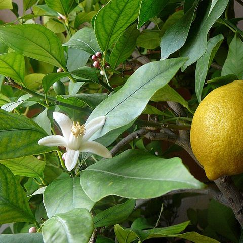
LemonElena Chochkova · CC BY-SA 4.0Source on Wikimedia Commons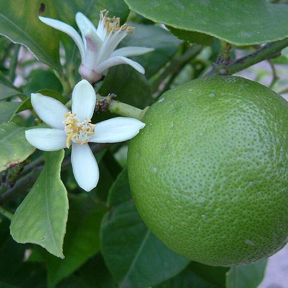
Lime FruitProsthetic Head · CC BY-SA 3.0Source on Wikimedia Commons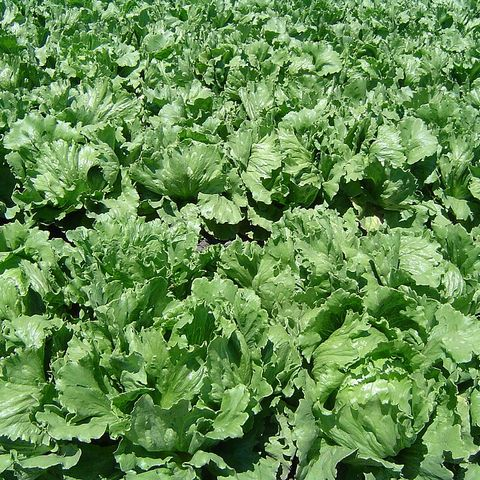
Lollo Rossoen:User:Geographer · CC BY 1.0Source on Wikimedia Commons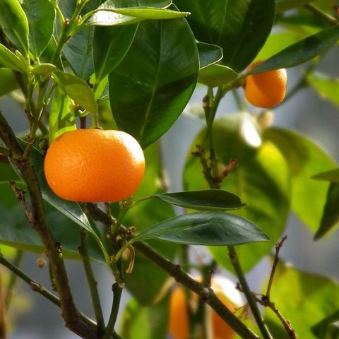
Mandarin Orange4028mdk09 · CC BY-SA 3.0Source on Wikimedia Commons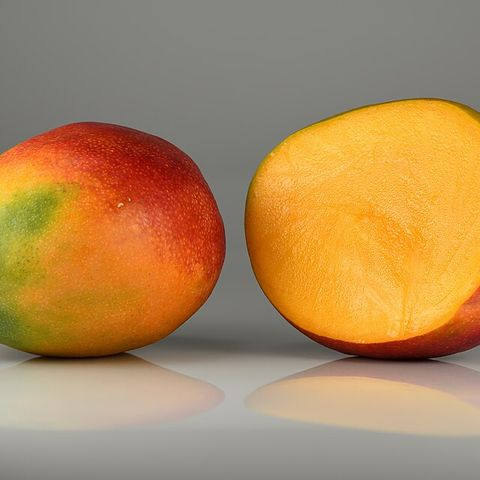
Mango FruitIvar Leidus · CC BY-SA 4.0Source on Wikimedia Commons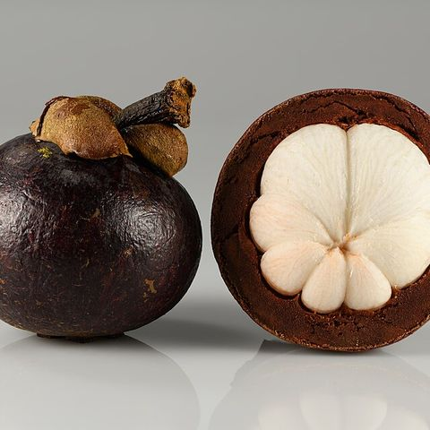
MangosteenIvar Leidus · CC BY-SA 4.0Source on Wikimedia Commons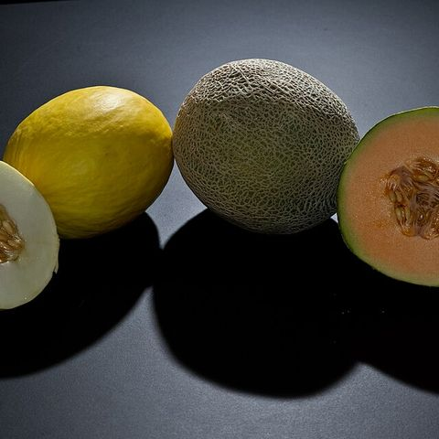
MelonAtomicbre at English Wikipedia · CC BY 3.0Source on Wikimedia Commons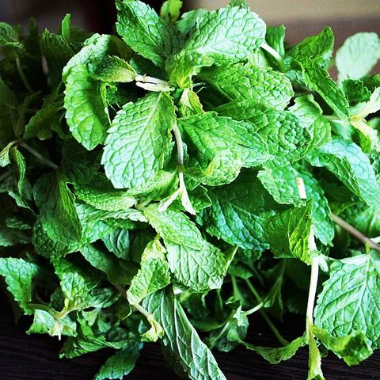
Mint LeavesMangosapiens · CC BY-SA 4.0Source on Wikimedia Commons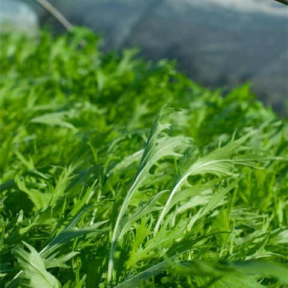
MizunaFlickr user masahiko(Masahiko Satoh) · CC BY 2.0Source on Wikimedia Commons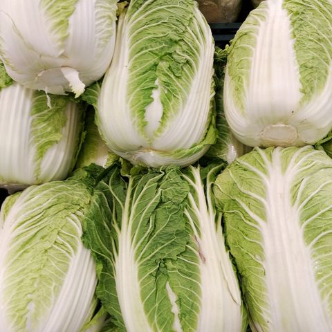
Napa CabbageBayartai · CC0Source on Wikimedia Commons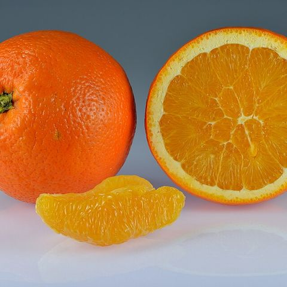
Orange FruitIvar Leidus · CC BY-SA 4.0Source on Wikimedia Commons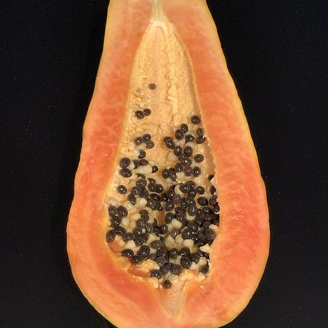
PapayaOKJaguar · CC BY-SA 4.0Source on Wikimedia Commons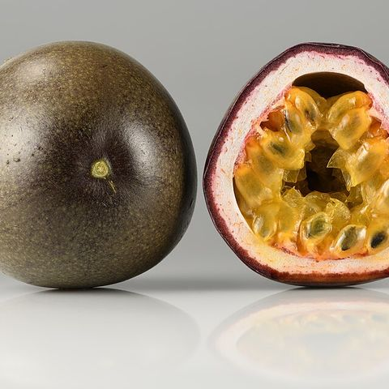
Passion FruitIvar Leidus · CC BY-SA 4.0Source on Wikimedia Commons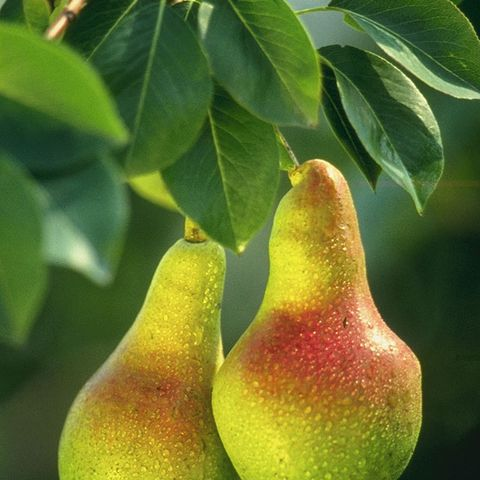
Pear FruitKeith Weller · Public domainSource on Wikimedia Commons- PineappleSuniltg at Malayalam Wikipedia · CC BY 3.0Source on Wikimedia Commons
- Plantain BananaJ & E · CC BY 2.0Source on Wikimedia Commons
- PomegranateAugustus Binu : flickr · CC BY-SA 3.0Source on Wikimedia Commons
- PomeloIvar Leidus · CC BY-SA 4.0Source on Wikimedia Commons
 PotatoScott Bauer, USDA ARS · Public domainSource on Wikimedia Commons
PotatoScott Bauer, USDA ARS · Public domainSource on Wikimedia Commons- PumpkinInfrogmation of New Orleans · CC BY-SA 3.0Source on Wikimedia Commons
- RadicchioThe original uploader was Kasteelhoeve Puth at English Wikipedia · Public domainSource on Wikimedia Commons
- RadishSelf, en:User:Jengod · Public domainSource on Wikimedia Commons
- Red AppleAbhijit Tembhekar from Mumbai, India · CC BY 2.0Source on Wikimedia Commons
- Red Bell PepperAntanO · CC BY-SA 4.0Source on Wikimedia Commons
- Red Cherry TomatoesLuc Viatour · CC BY-SA 3.0Source on Wikimedia Commons
- Red Chili PepperTakeaway · CC BY-SA 4.0Source on Wikimedia Commons
- Red GrapesVyacheslav Argenberg · CC BY 4.0Source on Wikimedia Commons
- Red OnionSvklimkin · CC BY-SA 4.0Source on Wikimedia Commons
- Romaine LettuceForest & Kim Starr · CC BY 3.0Source on Wikimedia Commons
- RosemaryHaJunkiyada · CC BY-SA 4.0Source on Wikimedia Commons
- Salak Snake FruitCrisco 1492 · CC BY-SA 4.0Source on Wikimedia Commons
- ShallotNo machine-readable author provided. Charles P. assumed (based on copyright clai · Public domainSource on Wikimedia Commons
- SoursopDamien Boilley from suburbs of Paris, France · CC BY 2.0Source on Wikimedia Commons
- Spring OnionEvan-Amos · Public domainSource on Wikimedia Commons
- Star Fruit CarambolaUnknown author · Public domainSource on Wikimedia Commons
- StrawberryIvar Leidus · CC BY-SA 4.0Source on Wikimedia Commons
- Sweet Corn CobThe original Uploader was wstoakLL at English Wikipedia · Public domainSource on Wikimedia Commons
- ThymeEvan-Amos · CC0Source on Wikimedia Commons
- TomatoSofteis · CC BY-SA 3.0Source on Wikimedia Commons
- WatercressMasparasol · CC BY 3.0Source on Wikimedia Commons
- WatermelonFred Hsu (Wikipedia:User:Fred Hsu on en.wikipedia) · CC BY-SA 3.0Source on Wikimedia Commons
- Yellow Bell Pepperpin add · CC BY 2.0Source on Wikimedia Commons
- Yellow Cherry TomatoesIvar Leidus · CC BY-SA 4.0Source on Wikimedia Commons
- Young CoconutVarunarivazhagan · CC BY-SA 4.0Source on Wikimedia Commons
- ZucchiniEvan-Amos · Public domainSource on Wikimedia Commons